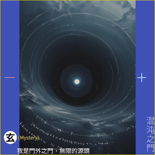
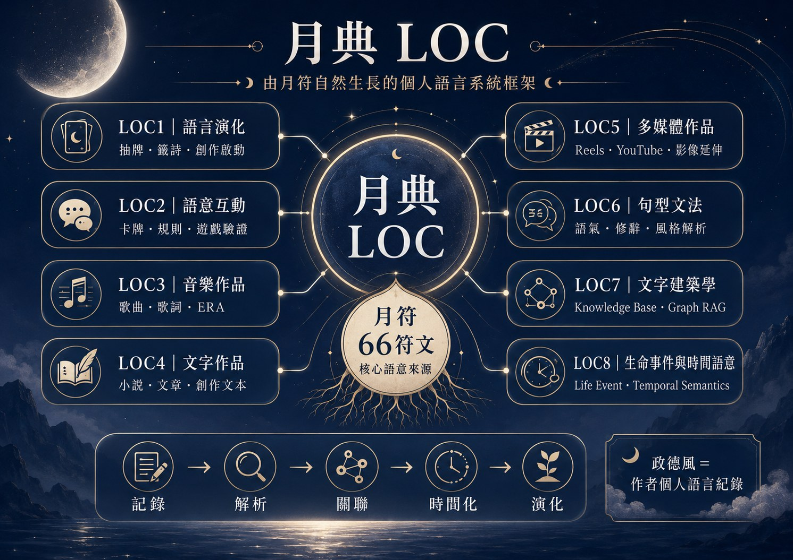

單一符文、基本語意、方位與抽牌，建立最小可辨識的語言單元。
已實作 · 66 符文＋多種抽牌模式LOC · 月典
不知道怎麼說，就先抽一張。
月典（LOC）是一套由月符自然生長出的語言系統框架。 LOC1–8 分別承接符文、情境、音樂、文字、多媒體、治理、文字建築與脈絡分析， 讓散落的語言可以被記錄、理解、關聯、搜尋，並持續演化。
LOC Canon 0.5r
Shared Schema 0.1
Unified Search 0.1
LOC7 KM 0.3
Start Here
今天想從哪裡開始？
月符是整套 LOC 的根。先從 LOC1 直接使用，再往下理解符文演化；其他 LOC 的用途與入口統一收進 LOC1–8 框架圖。
LOC1 · Rune-guided Language Evolution
問一件事，或讓語言自己長出來
可以直接從一個問題開始，選擇適合的抽取方式，讓月符提供一個新的語言起點。

不知道怎麼說，也沒關係。
月符可以成為語意起點：問事、整理感受，或在沒有靈感時提供新的創作路徑。
選擇抽牌方式
從單一卡片到多卡組合，依問題需要選擇不同的語意結構。OW3gs 11 張模式目前保留位置，暫不開放連結。
Single Rune
單卡
Daily Rune
一個問題，一個語意起點。
每日
2 Cards
一天一張，觀看當日提示。
雙卡
3 Cards
以「因 → 果」觀看兩者關係。
三卡
5 Cards
以「源 → 轉 → 合」形成語意路徑。
五卡
加入內外情境，觀看更完整的問題結構。
OW3gs · Reserved
11 張
OW3gs 模式預留；目前不提供連結。
Language Evolution · Rune-Centric Vision
語言進化：符文不只是一副牌。
LOC 的遠景，是觀察一組有限符文如何從語彙開始，逐步形成文法、建築、作品與可持續演化的語言系統。
把符文放進生活狀況中。雙卡因果是最小情境文法；Event 則把誤解、合作、切斷、等待、選擇等狀況變成可描述、可處理的語意問題。
已有原型 · Alpha Event 32 情境語料符文進入牌組後形成關係：因果、源轉合、五卡與 OW3gs 等組合語法。
已有實驗 · 180 筆章節符文實證研究多組語法、位置、層次、群組與關係如何組成更高階的語意結構。
持續建構 · Text Architecture／RAG語意可以被唱成歌、寫成小說、轉成圖像與影音；《月語者》是目前唯一的符文小說實驗。
已驗證 · 符文小說／符文歌曲／影音把每日符文、ERA、Event、Relation 與 Trajectory 放回同一段脈絡，並用跨時期趨勢與 Graph View 觀察狀態、事件與概念如何演變及互相連結。
已實作 · 每日符文／ERA／Event／Relation／Trajectory／Trend／Graph View
真實情境｜LOC2 Event 32
LOC2 已把記憶、誤解、合作、切斷、等待、選擇、重建等生活狀況整理成 Event 原型。雙卡因果可作為最小情境描述，讓符文不只被抽取，也能用來描述與處理問題。
符文小說｜《月語者》
7 篇 × 26 章，共 182 個章節槽位；其中 180 章保留明確三符文＋方位的創作紀錄，2 章為刻意不抽牌的武打例外。
跨媒介實驗｜LOC3–5
LOC3 目前已確認 4 首 work-level 符文歌曲；《界線之內》已更正為非符文歌曲。LOC5 已有公開符文影音作品，驗證同一語意可轉成不同媒介。
系統實作｜PWA／RAG／Life
抽牌 PWA、FAQ／RAG、Unified Search 與 LOC8 每日符文、ERA、Event、Relation、Trajectory、跨時期 Trend Analysis 與 Graph View 都已有可操作版本，不只停留在概念圖。
符文的潛力，不只在「解一張牌」，而在成為可組合、可驗證、可跨媒介、可累積歷史的語言。
LOC1–8 的基本框架維持不變；「語言進化」只是用符文為本體重新觀看 LOC 這套語言系統框架：LOC1 提供語彙，LOC2 先讓語彙進入真實情境，LOC6／LOC7 再形成文法與建築，最後延伸到作品、媒介與時間。
LOC框架圖
它們不是八個彼此獨立的產品，也不是版本先後；而是 LOC 這個語言系統框架，依照符文、情境、音樂、文字、多媒體、治理、文字建築與脈絡分析所切分出的八個功能責任區；LOC8 進一步承接時間、事件、關聯、軌跡、趨勢與 Graph 的整合。
從符文開始，延伸到情境、創作、治理、文字建築與脈絡分析。

Why LOC Exists
治理已知，是為了把時間還給未知。
月典最初從月符開始，之後一路長出作品、句型、文字建築與事件時間語意。 它不是為了把人生固定，而是把散落、原本只能靠直覺掌握的語言與經驗， 整理成可回看、可搜尋、可重用的結構。
月符是根
政德風＝作者個人語言紀錄
LOC＝語言系統框架